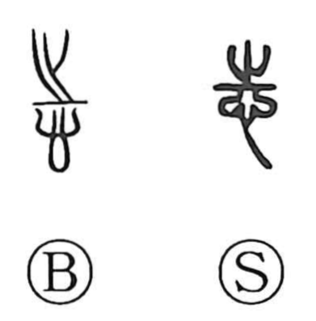

志

Uncategorized
Kun: kokorozasu, kokorozashi | On: shi
will ・ intention ・ ambition ・ aspiration
Explanation
A phono-semantic character: its upper element was originally the graph 之, which supplies the on reading shi and carries the sense of going, while the lower part is the heart, 心. Together they picture a heart set toward a direction—an inward resolve or intention. The Great Preface to the Book of Odes expresses this idea: what abides in the heart is zhi; when voiced, it becomes poetry. In early usage 志 thus meant what is held in the heart and also the act of setting it down in one’s mind, which led to its occasional use in place of 誌, “to record.”